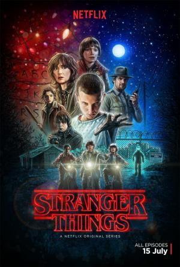

Stranger Things |
||
|---|---|---|
|  | Sinopsis: Homenaje a los clásicos misterios sobrenaturales de los años 80, "Stranger Things" es la historia de un niño que desaparece en el pequeño pueblo de Hawkins, Indiana, sin dejar rastro en 1983. En su búsqueda desesperada, tanto sus amigos y familiares como el sheriff local se ven envueltos en un enigma extraordinario: experimentos ultrasecretos, fuerzas paranormales terroríficas y una niña muy, muy rara... |
Director: The Duffer Brothers Reparto:Winona Ryder, David Harbour, Matthew Modine Año: 2016 Duracion:50 min por capitulos Pais:Estados Unidos |
Criticas Profesionales:Jeannette CatsoulisEste artesanal thriller de venganzas se desenvuelve con tanto estilo - e incluso algún ingenio- que su falta de sustancia tarda mucho más de lo habitual en ser un problema |
Trailer |
Obtener:AlquilarComprar |
Registrate/Iniciar Sesion